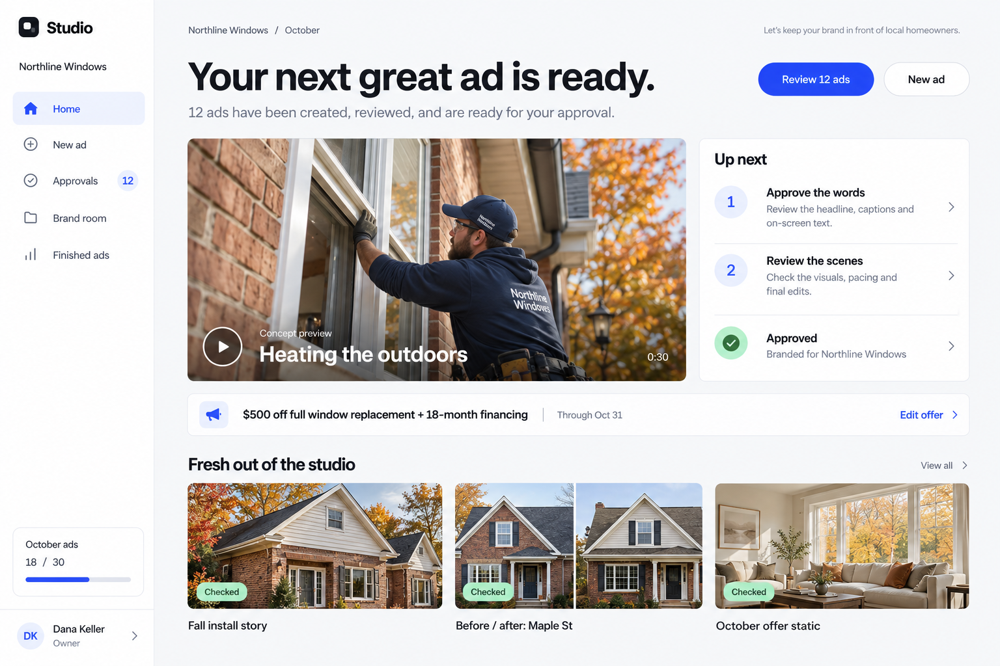

Studio / Design discussion / Three generated concepts
A more considered creative workspace.
Compare each concept with the running app. These images explore layout and visual hierarchy; the proposed screens are not implemented.

Studio / Design discussion / Three generated concepts
Compare each concept with the running app. These images explore layout and visual hierarchy; the proposed screens are not implemented.
